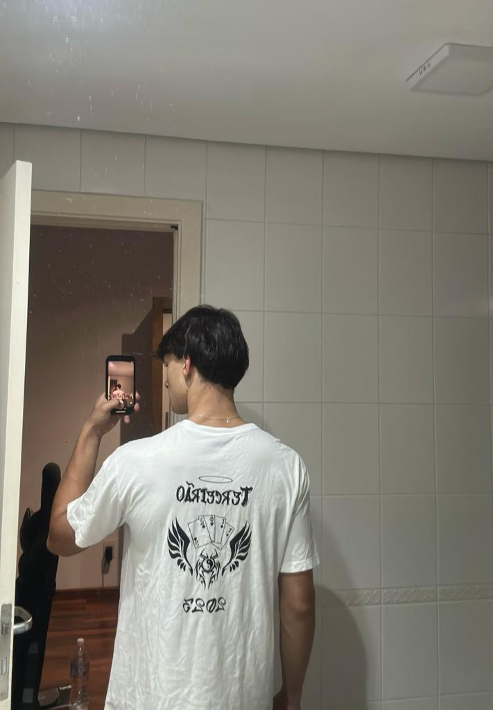
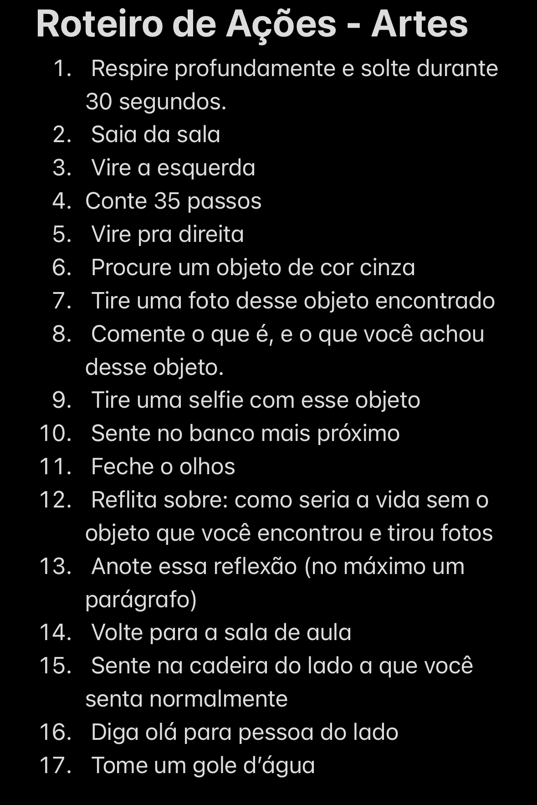
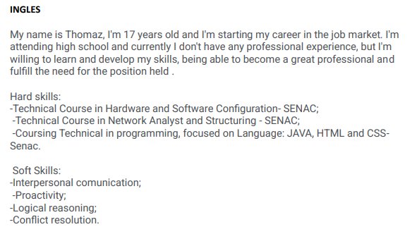

Em linguagens, as atividades que eu mais gostei foram as seguintes:
1- Estampa da camiseta do terceirão

Essa sem dúvida foi a melhor atividade que fizemos esse ano (exeto essa! hahaahha), brincadeiras a parte, foi uma atividade muito legal, onde trabalhamos em conjunto desde o design até a confecção e agora temos para sempre essa recordção.
2- Roteiro de ações

Essa atividade guida pelo professor Diego, foi uma atividade bem intuitiva. Todos da sala criaram um roteiro semelhante a esse, e no final, os alunos trocaram os roteiros e saímos fazendo essas atividade pela escola.
3- Criação do perfil no Linkedin

Uma das atividades mais importantes desse ano foi essa da professora Talita. Foi um grande passo para a nossa entrada no mercado de trabalho.